新玩家旅程：选游戏到返回大厅
范围、问题与边界 · 普通UI报告 · 单列技术夹具 · 游戏大厅
先列三张修复前证据，再按桌面/窄屏步骤展示。完整流程以堡垒v2为样本；未重复通关，未声称全部作品体验验收。
修复前公开页面 · desktop-03-compare.png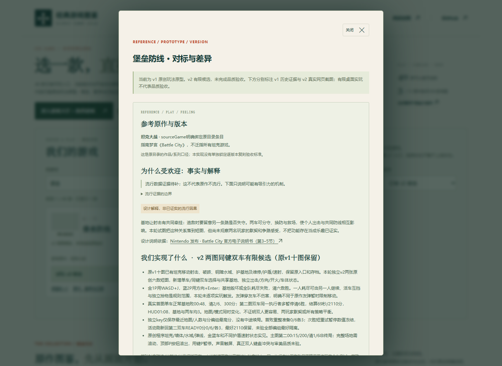
修复前公开页面 · narrow-04-game.png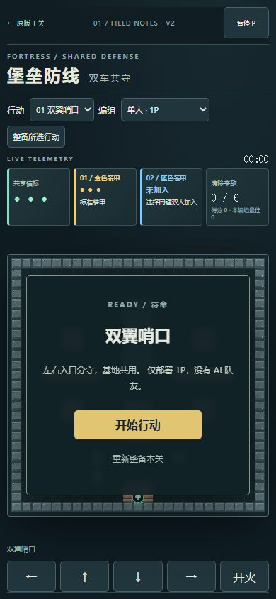
修复前公开页面 · narrow-07-returned.png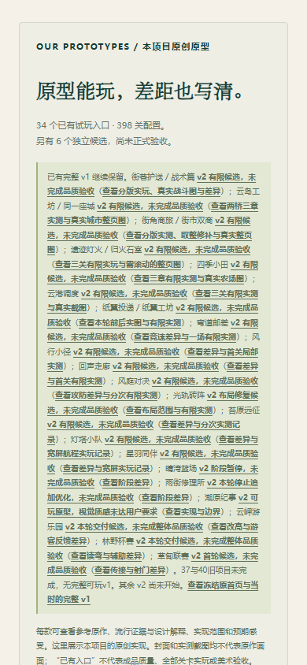
desktop · 第1步 entry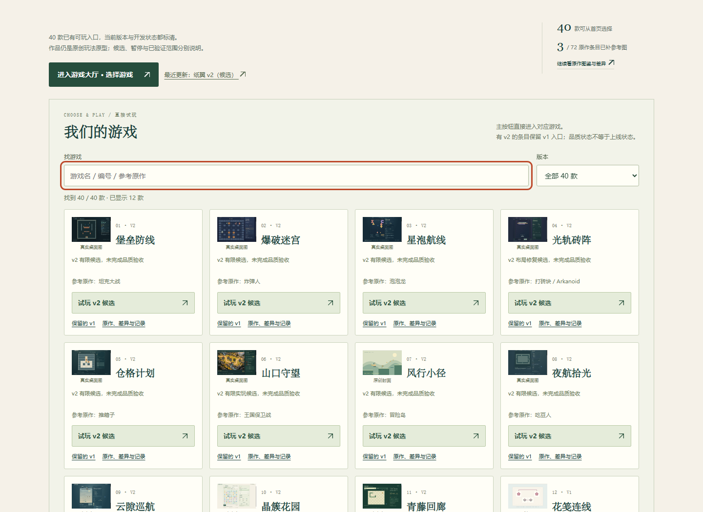
desktop · 第2步 filtered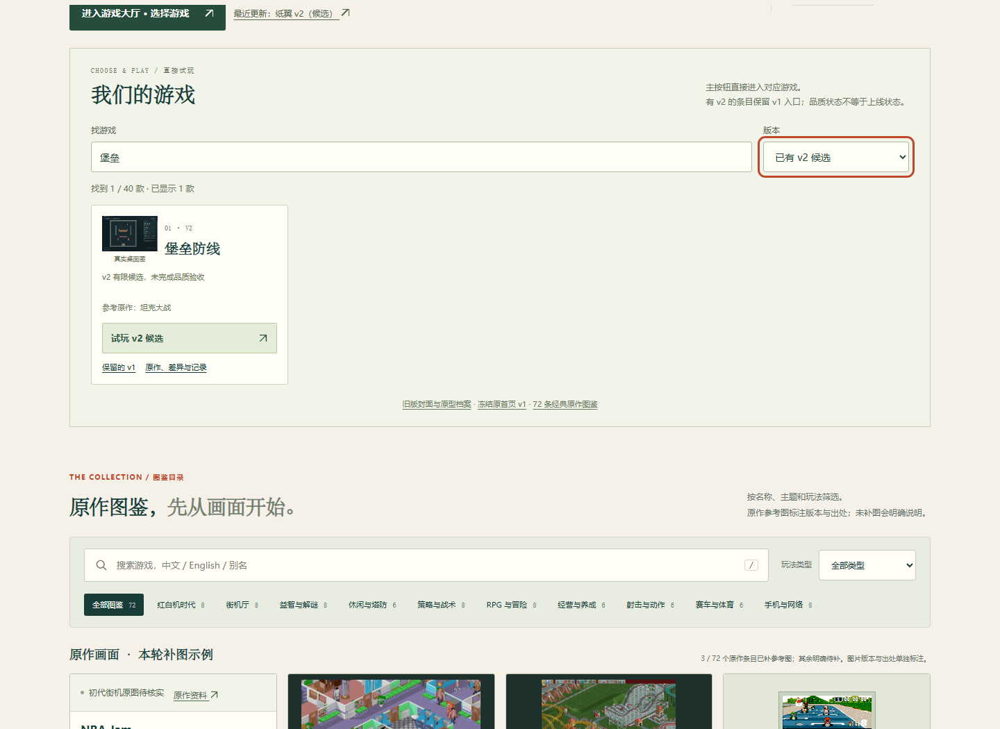
desktop · 第3步 comparison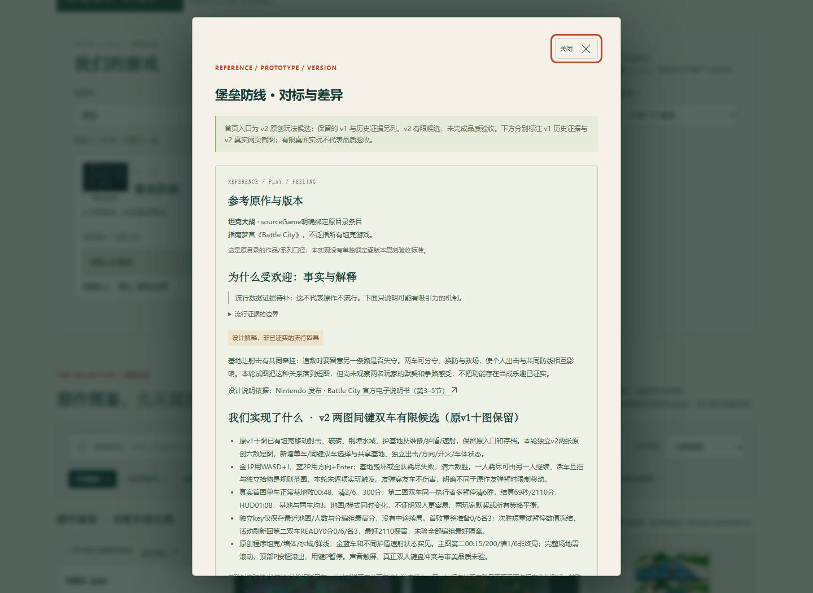
desktop · 第4步 recommended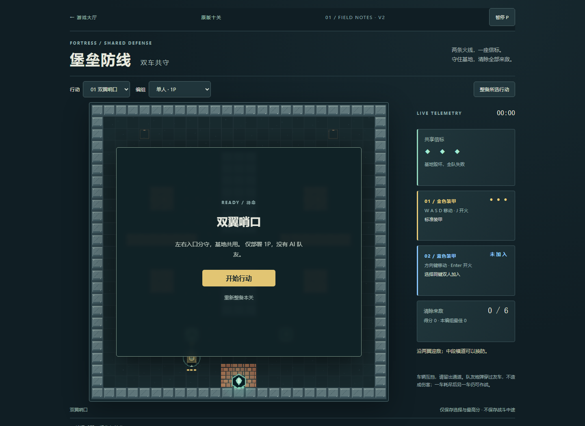
desktop · 第5步 instructions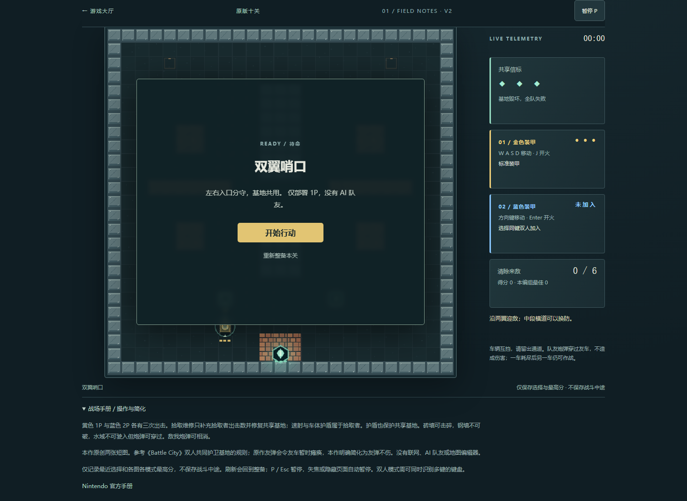
desktop · 第6步 returned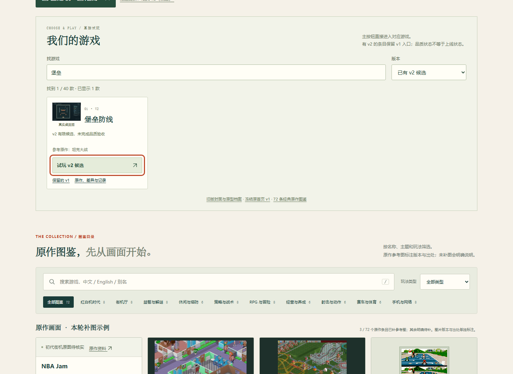
desktop · 第7步 expanded-return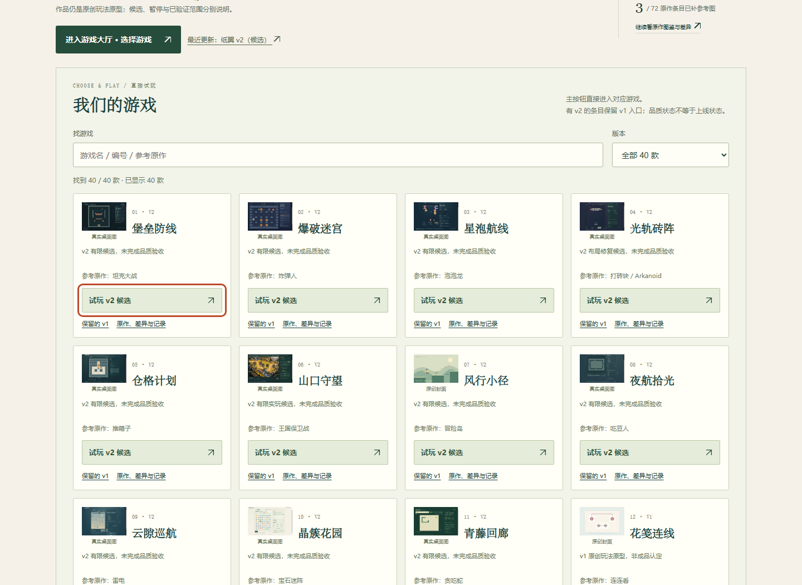
narrow · 第1步 entry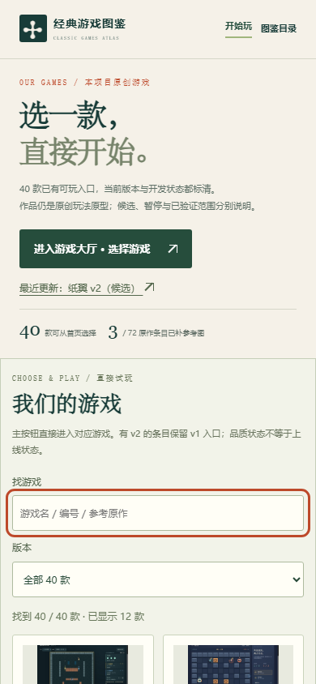
narrow · 第2步 filtered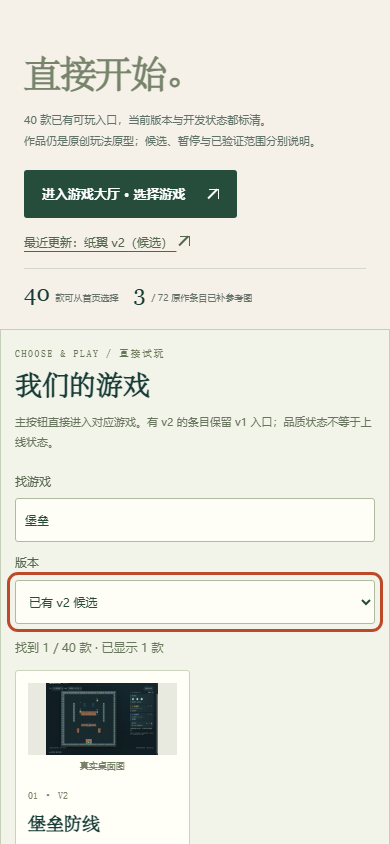
narrow · 第3步 comparison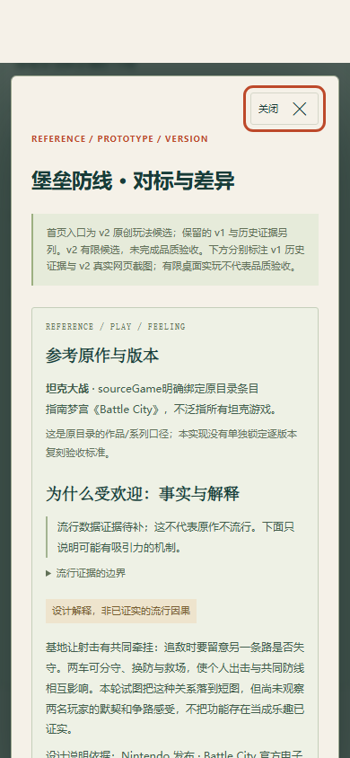
narrow · 第4步 recommended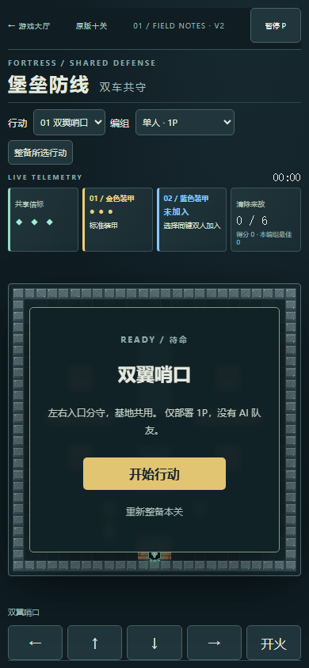
narrow · 第5步 instructions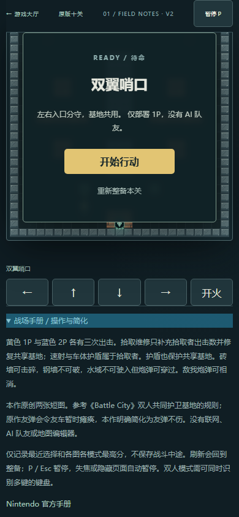
narrow · 第6步 returned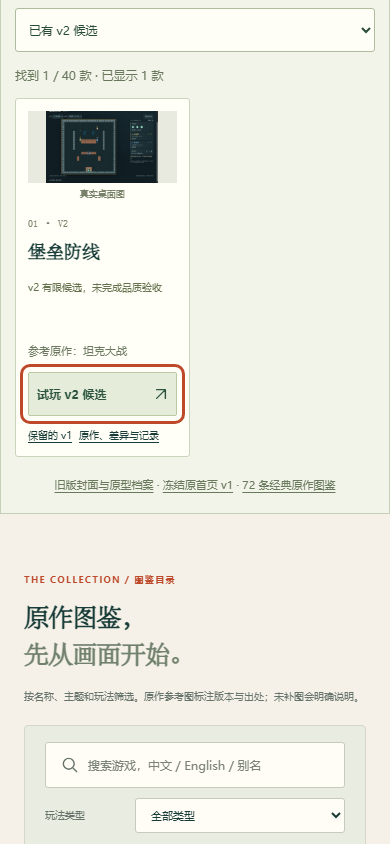